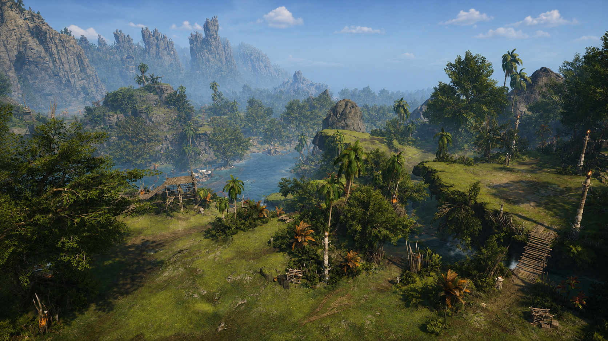

Ostrov Saurodoma leží daleko od pevniny a patří mezi nejnebezpečnější místa v okolních vodách. Jeho pobřeží tvoří strmé útesy a ostré skály, zatímco vnitrozemí pokrývají husté pralesy, bažiny a kamenité vyvýšeniny. Díky členitému terénu je pohyb po ostrově obtížný a nebezpečný i pro zkušené dobrodruhy. Ostrov obývá rasa ještěřích lidí, kteří běžně přesahují výšku dvou metrů. Jejich mohutná těla pokrývají tvrdé šupiny a jsou známí svou silou, odolností i bojovými schopnostmi. Většina z nich žije v kmenových společenstvích rozesetých po celém ostrově a jen zřídka navazuje kontakt s okolním světem. Cizince považují za vetřelce a své území brání s neobyčejnou zuřivostí. Mezi skalami, džunglemi a bažinami se nacházejí pozůstatky dávných staveb, jejichž původ je dnes zahalen tajemstvím. Mnozí věří, že ukrývají cenné artefakty, zapomenuté znalosti i bohatství nashromážděné během staletí. Právě tyto legendy lákají na ostrov dobrodruhy, lovce pokladů a žoldnéře navzdory nebezpečí, které zde číhá na každém kroku.